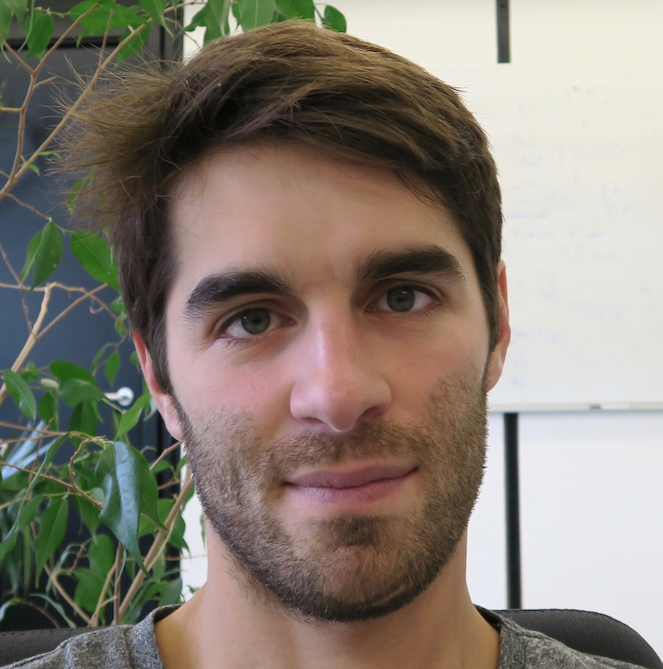

Florent Martin
 Email: florent.guy.martin@gmail.com github.com/florentguymartin
github.com/florentguymartin
 linkedin.com/in/florent-guy-martin/
linkedin.com/in/florent-guy-martin/
I am a senior data scientist and consultant working at BCG Gamma as well as a mathematician and a computer scientist. If you are intersted in my work in mathematics or computer science, please look at my research and former course offerings.
From September 2014, untill September 2018 I worked as a postdoctoral researcher in the mathematical department of Regensburg University with Walter Gubler and Klaus Künnemann. I was part of the project SFB Higher Invariants .
From September 2013 to August 2014, I was a post-doc at University of Lille and a visiting researcher at ETH in Zurich, working with Raf Cluckers.
I have made my Phd thesis under the supervision of Antoine Ducros and Jean-François Dat at Institut mathématiques de Jussieu.
My research interests include arithmetic geometry, non-archimedean geometry, model theory, automata theory, computational complexity, machine learning and NLP.